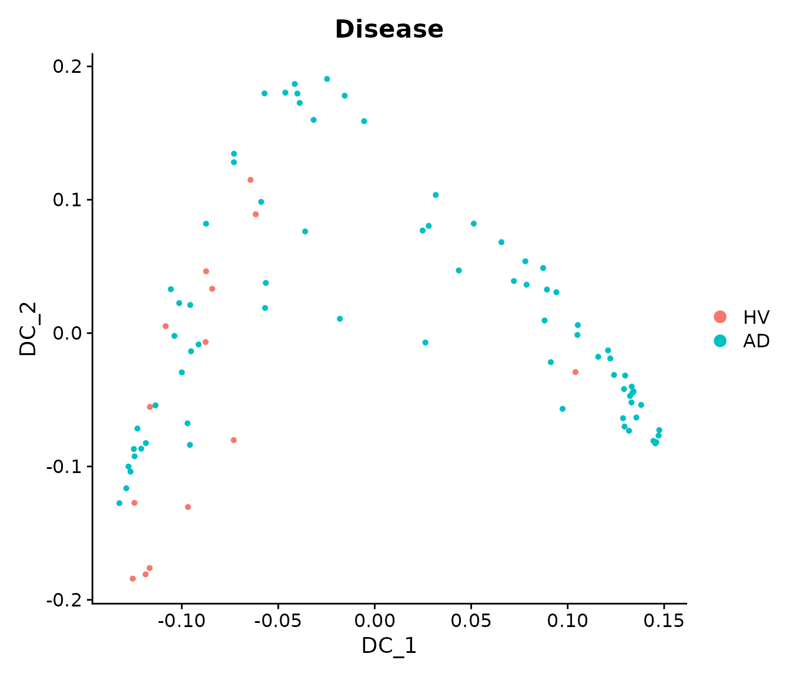
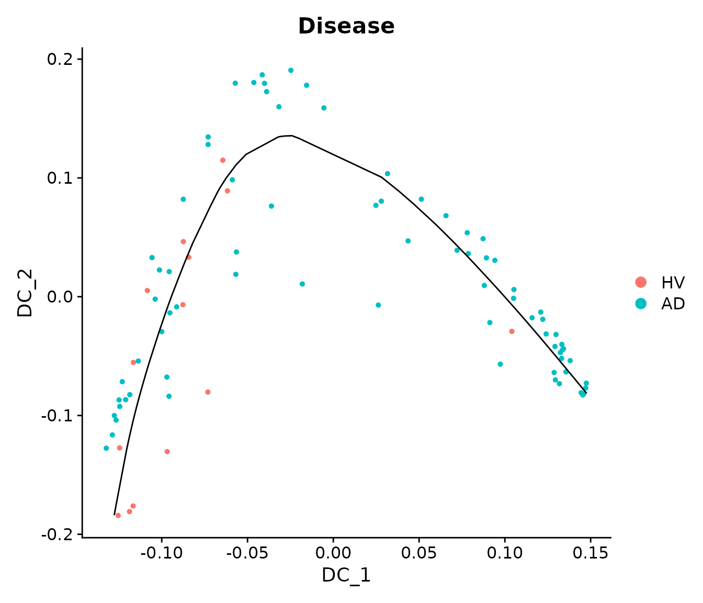
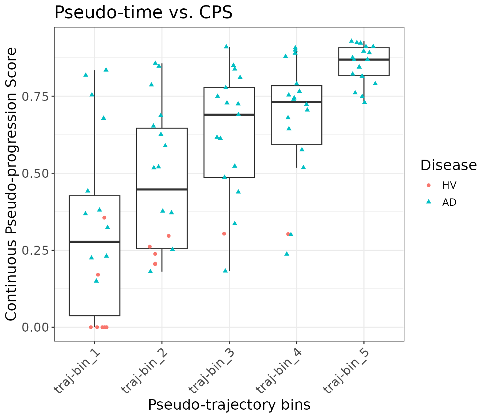
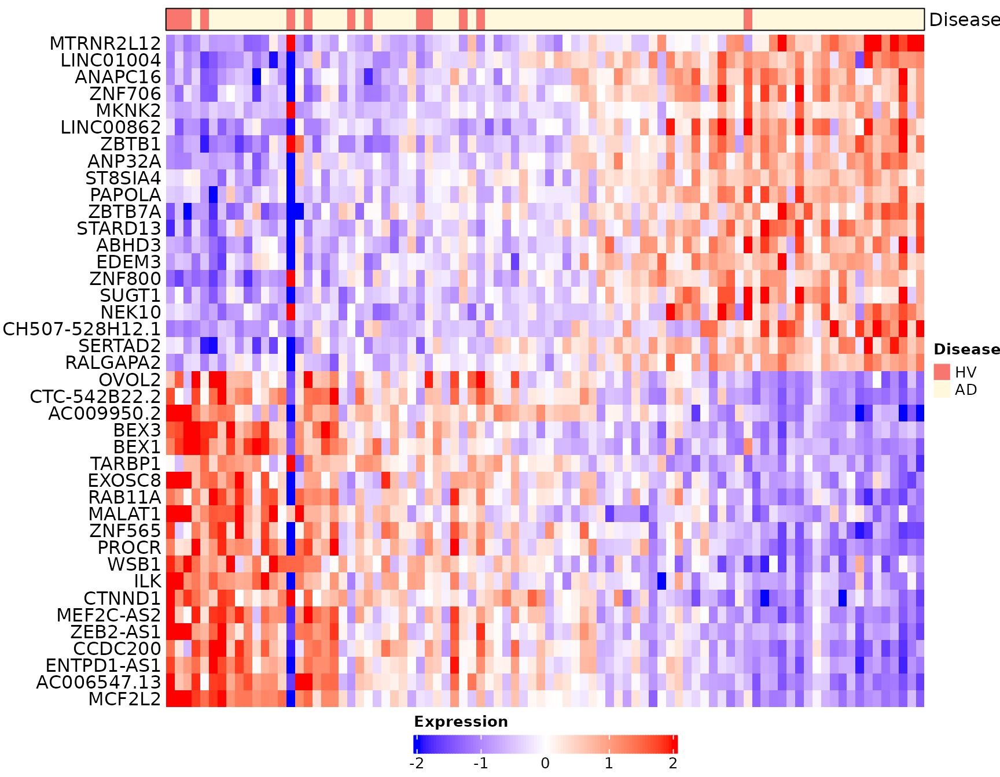

vignettes/scSLIDE_SEA_AD.Rmd
scSLIDE_SEA_AD.RmdThis vignette will illustrate how to utilize the BPCells (developed by Benjamin Parks) functionality in Seurat to apply scSLIDE to large-scale single-cell data. We will also utilize future R-package’s parallelization to improve the runtime. We will be using a publicly available Alzheimer’s disease snRNA-seq dataset from the Allen Brain Institute for demonstration.
First, we load all necessary libraries and set up the working environment.
# some other packages that will be used in this vignette can be installed using the following commands:
# remotes::install_github("bnprks/BPCells/r")
# remotes::install_github("xmc811/Scillus", ref = "development")
# BiocManager::install("destiny")
# install.packages(c("princurve", "ggridges"))
library(SeuratObject)
library(Seurat)
library(scSLIDE)
library(AzimuthAPI)
library(princurve)
library(ggplot2)
library(ggridges)
library(Scillus)
library(future)
library(knn.covertree)
library(destiny)
library(BPCells)
# create a file name
DATA_NAME = "SEA_AD_atlas_MTG"We will use the SEA-AD snRNA-seq data (~1.4m cells) from Gabitto et al 2024 Nat. Neurosci. as an example for our workflow. This dataset can be downloaded from CZI Cellxgene data portal. There are several datasets available at this link, and we will be using the data collected from patients’ MTG (middle temporal gyrus) region.
The original file is in .h5ad AnnData format. Users can load the whole data into R using packages like the anndata R-package, but this is often not memory-efficient enough. Below, we will show you how to generate an on-disk Seurat object based on the .h5ad file, and apply our scSLIDE to this on-disk data in our following analyses.
Note that before proceeding to the following workflow, if you want to annotate your single-cell .h5ad file with our Pan-Human Azimuth python tool, you can follow the simple instruction provided here.
Click here to see how to generate an on-disk Seurat object from .h5ad
# path to the h5ad file (assuming it has been annotated by the Pan-Human Azimuth python tool)
file_path = "./SEA_AD_atlas_MTG_ANN.h5ad"
# the path to save the on-disk matrix object (from BPCells)
ondisk_path = paste0("./", DATA_NAME, "_ondisk/")
# load the count matrix with BPCells
ondisk.data <- open_matrix_anndata_hdf5(file_path, group = "/X")
# write this BPCells matrix to disk
write_matrix_dir(mat = ondisk.data, dir = ondisk_path)
# get necessary components from the original h5ad file
# feature names
feature_metadata = schard::h5ad2data.frame(file_path, 'var')
# metadata
metadata = schard::h5ad2data.frame(file_path, 'obs')
# get the pan-human Azimuth embeddings / umap
ann_embedding = t(schard::h5ad2Matrix(file_path,
'/obsm/azimuth_embed'))
# now load the on-disk BPCells data
ondisk.mat <- open_matrix_dir(dir = ondisk_path)
# rename the rownames/features using gene symbol instead of ENSG IDs
rownames(ondisk.mat) = feature_metadata$feature_name
# finally, create an on-disk Seurat object and add the metadata; This object links to the `ondisk.mat` BPCells matrix.
ondisk.object <- CreateSeuratObject(counts = ondisk.mat, meta.data = metadata)
# add low-dim objects to the Seurat object
# add ann_embeddings
rownames(ann_embedding) = colnames(ondisk.object)
ondisk.object[['azimuth_embed']] = CreateDimReducObject(embeddings = ann_embedding, assay = "RNA", key = "Ann_")
##### Basic QC and preprocessing for the on-disk data
# nCount and nFeature
ondisk.object <- subset(ondisk.object, subset = nCount_RNA >= 1000 & nFeature_RNA >= 500)
# remove cells with discordant ANN_celltype_labels
ondisk.object <- subset(ondisk.object, subset = full_consistent_hierarchy == TRUE)
# remove cells with very low final_level prob
ondisk.object <- subset(ondisk.object, subset = final_level_softmax_prob >= 0.6)
# next we will remove cells from cell types with cell count less than 50
ct_table = table(ondisk.object$Subclass)
keep_celltype = names(ct_table)[ct_table >= 50]
ondisk.object <- subset(ondisk.object, subset = Subclass %in% keep_celltype)
# generate necessary metadata columns
ondisk.object$Donor = as.character(ondisk.object$donor_id)
ondisk.object$dementia = ondisk.object$disease
# rename the disease
ondisk.object$Disease = "HV"
ondisk.object$Disease[!ondisk.object$ADNC %in% c("Not AD", "Reference")] = "AD"
ondisk.object$Disease = factor(ondisk.object$Disease, levels = c("HV", "AD"))
# fix the 'Age' and 'Sex' meta-data
ondisk.object$Sex = ondisk.object$sex
# Note that those donors labelled with "80 year-old and over human stage" are actually >= 90 years old (cause it is inconsistent with 'Age at death'), so we need to manually fix it.
ondisk.object$Age = gsub(pattern = "-year-old human stage", replacement = "", ondisk.object$development_stage)
ondisk.object$Age[ondisk.object$development_stage == "80 year-old and over human stage"] = 90
ondisk.object$Age = as.numeric(ondisk.object$Age)
# save the object for later use
saveRDS(ondisk.object, file = paste0("Seurat_obj_1_OnDisk_", DATA_NAME, ".rds"))
rm(ondisk.object, ann_embedding, metadata, feature_metadata, ondisk.mat, ondisk.data)
gc()Here, we will load the on-disk Seurat object into R, and process it just like a regular in-memory object with normalization and finding variable features.
# load the Seurat on-disk object
object = readRDS(paste0("./Seurat_obj_1_OnDisk_", DATA_NAME, ".rds"))
# basic processing
object = NormalizeData(object)
object = FindVariableFeatures(object, nfeatures = 2000)To perform all necessary pre-processing steps, we provide a wrapper function called PrepareSampleObject(). This function prepares a single-cell Seurat object for downstream sample-level density analysis. It (optionally) identifies additional highly variable genes through correlation testing, creates training and landmark cell subsets via sketching methods, performs PLS learning to capture response-relevant variation, and constructs a weighted multi-modal nearest neighbor graph between landmark cells and the full dataset. The function outputs a prepared Seurat object containing the landmark assay and a cell-to-landmark WNN graph needed for subsequent sample object generation.
Note that here we are specifying max_core = and future.memory.per.core = to utilize future’s multicore parallelization functionality to reduce the runtime. We will require 4 cores and a total of 3000 Mb * 4 shared memory for this process. Note that “multicore” is not supported by R-studio.
object <- PrepareSampleObject(object = object,
assay = "RNA",
add.hvg = T,
group.by.CorTest = "Subclass",
Y = "Disease",
sketch.training = T,
group.by.Sketch = "Donor",
ncells.per.group = 3000,
ncells.landmark = 5000,
ncomp = 20,
pls.function = "cppls",
k.nn = 5,
name.reduction.1 = "azimuth_embed",
dims.reduction.1 = 1:128,
fix.wnn.weights = c(0.5, 0.5),
max_core = 4,
future.memory.per.core = 3000,
rm.training.assay = T,
verbose = F)Once a WNN graph is constructed, we can generate a sample-level density matrix. Given the asymmetric landmark-by-cell WNN graph, scSLIDE aggregates over cells to obtain a landmark-by-sample density matrix (m landmarks by n samples) by binarizing adjacency (neighbor = 1, else 0) and summing per sample. Each entry in this landmark-by-sample matrix measures the cell density near each landmark for a given donor.
The function GenerateSampleObject() automatically generates this sample-level object based on the WNN object specified by nn.name =. Additionally, it helps users search for donor-level metadata from the original single-cell object and append it to the sample-level object (optional). It also performs a Chi-squared normalization (based on Poisson distribution of a contingency table) for the count matrix (optional; standard log-normalization is also supported).
sample_obj = GenerateSampleObject(object = object,
sketch.assay = "LANDMARK",
nn.name = "weighted.nn",
group.by = "Donor",
rename.group.by = "Subclass",
k.nn = 5,
normalization.method = "ChiSquared",
add.meta.data = TRUE,
return.seurat = T,
new_assay_name = "LMC"
)
# we can filter out donors with cell count less than 200 (i.e., nCount_LMC = k.nn * cell_count < 1000)
sample_obj = subset(sample_obj, subset = nCount_LMC >= 1000)
# Center the data
sample_obj = ScaleData(sample_obj, features = rownames(sample_obj), do.scale = F, do.center = T)To better denoise the sample-level data, instead of performing standard PCA, we will perform Diffusion Map (a non-linear unsupervised dimensional reduction method originally proposed by Haghverdi et al Bioinformatics to capture single-cell trajectories).
sample_obj = RunDiffusionMap(sample_obj, assay = "LMC", layer = "scale.data", features = rownames(sample_obj), ncomp = 5)By visualizing the Diffusion Map components, we can see that there seems to be a progression trajectory along DC1 and DC2 jointly.
DimPlot(sample_obj, reduction = "DiffMap", group.by = "Disease") 
We append DC1-3 to the metadata and analyze their relationships with clinical variables.
# Append DC1-3 to the metadata
sample_obj[['traj_DC1']] = sample_obj@reductions$DiffMap@cell.embeddings[, 1]
sample_obj[['traj_DC2']] = sample_obj@reductions$DiffMap@cell.embeddings[, 2]
sample_obj[['traj_DC3']] = sample_obj@reductions$DiffMap@cell.embeddings[, 3]We can see that the first two DCs seem to represent a joint trajectory. We will fit a principal curve to them to infer a pseudo-trajectory curve.
princurve_res = princurve::principal_curve(sample_obj[['DiffMap']]@cell.embeddings[, 1:2],
plot = F, maxit = 20, trace = T)
sample_obj[['traj_overall']] = princurve_res$lambda
DimPlot(sample_obj, reduction = "DiffMap", group.by = "Disease") +
geom_path(aes(x = princurve_res$s[princurve_res$ord, 1], y = princurve_res$s[princurve_res$ord, 2]))
The following plots show that the principal curve is related to the neuropathological continuous pseudo-progression score (CPS) provided by the original paper. The CPS values were obtained by aggregating different patient-level neuropathological measurements from their postmortem brains, and it is independent from their scRNA-seq data.
mdata <- sample_obj@meta.data
mdata$bin_traj_overall <- cut(rank(mdata$traj_overall), breaks = 5, labels = paste0("traj-bin_", 1:5))
#
p11 = ggplot(data = mdata) +
geom_boxplot(aes(x = bin_traj_overall,
y = `Continuous Pseudo-progression Score`),
outliers = F) +
geom_point(aes(x = bin_traj_overall,
y = `Continuous Pseudo-progression Score`,
col = Disease,
shape = Disease),
position = position_jitter(width = 0.2, height = 0)) +
ggtitle("Pseudo-time vs. CPS") +
theme_bw() +
theme(title = element_text(hjust = 0.5, size = 15),
text = element_text(size = 13),
axis.text.x = element_text(hjust = 1, vjust = 1, angle = 45),
axis.text = element_text(size = 13)) +
xlab("Pseudo-trajectory bins") +
ylab("Continuous Pseudo-progression Score")
print(p11)
Finally, we can perform differential expression (DE) analysis to extract differentially expressed genes (DEGs) that change along the pseudo-trajectory we inferred.
First, we need to obtain the pseudobulked expression data for the original single-cell data:
bulk_obj = AggregateExpression(object, assays = "RNA", group.by = c("Donor", "Subclass"), return.seurat = T)
#> Centering and scaling data matrix
# Append the metadata to pseudobulked object
mdata = object@meta.data[, c("Donor", "Subclass")]
mdata = mdata[!duplicated(mdata), ]
rownames(mdata) = paste0(gsub(pattern = "_", replacement = "-", mdata$Donor),
"_",
gsub(pattern = "_", replacement = "-", mdata$Subclass))
bulk_obj = AddMetaData(bulk_obj, metadata = mdata)
bulk_obj$nCount_RNA = colSums(x = bulk_obj, slot = "counts") # nCount_RNA
bulk_obj$nFeature_RNA = colSums(x = LayerData(object = bulk_obj, layer = "counts") > 0) # nFeature_RNAThen we run DE analysis for one cell type at a time. We will use “Microglia-PVM” as an example.
sub_bulk_obj = subset(bulk_obj, subset = Subclass == "Microglia-PVM")
# Add metadata from sample-level object to pseudobulk object
new_mdata = merge(sub_bulk_obj@meta.data[, c("Donor"), drop = F],
sample_obj@meta.data[, c("Donor", "Age", "Sex", "Disease", "traj_overall")],
by = "Donor",
all.x = T,
sort = FALSE)
sub_bulk_obj = AddMetaData(sub_bulk_obj, metadata = new_mdata)
sub_bulk_obj$log_count = log10(sub_bulk_obj$nCount_RNA)We can now run trajectory DE tests.
de_results = TrajDETest(sub_bulk_obj, assay = "RNA", layer = "counts",
traj.var = "traj_overall", latent.vars = c("Age", "Sex", "log_count"))Now, for the DE results, we will identify the top up- and down-regulated DEGs for visualization:
de_results$sign = sign(de_results$beta_Traj)
de_results = de_results[order(de_results$sign, de_results$p_Traj), ]
# omit MT- and other non-coding DEGs for visualization
de_results = de_results[!grepl("^(MT-|RP)", de_results$gene_ID), ]
# Identify the top up- and down-regulated DEGs for visualization
DEG_traj_overall = c(de_results$gene_ID[de_results$sign > 0][1:20],
de_results$gene_ID[de_results$sign < 0][20:1])Heatmap visualization for this cell type:
# Heatmap visualization for traj_overall (donors are ordered based on traj_overall)
sub_bulk_obj = ScaleData(sub_bulk_obj, features = DEG_traj_overall)
Scillus::plot_heatmap(dataset = sub_bulk_obj,
markers = DEG_traj_overall,
sort_var = "traj_overall",
anno_var = c("Disease"),
anno_colors = list(c("#f8766d", "cornsilk" )),
hm_colors = c("blue","white","red"))